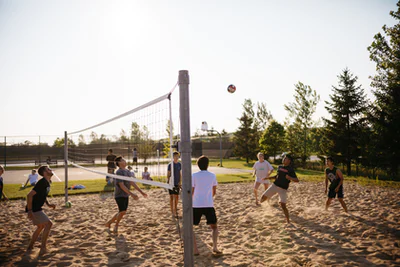

Introduction to Volleyball
Volleyball is not for everyone. However, if you practice and are interested in the game you can become amazing! Some key reminders are to not give up. It can and will be very frustrating in the begining. Your daughter or son will be whining about how their arms hurt or how they can't serve the ball over or how they don't know the right timing or approach for hitting the ball. But, with pratice makes perfect.
There are some key components for volleyball and that is serving, passing, setting, hitting, and blocking. Some kids can play all these positions and others can not, but don't them get discouraged for not being able to play certain positions. You can only have six people on the court at once. If a child is shorter they are normally a back row player which involves them passing the ball and serve receiving. If your child is taller they will most likely play on the front row as a hitter or blocker. However, setters are a special and important player on the team. They are like a quarterback on a football team, they are the person who is quick and will let the front row hit the ball and possibly get a point for your team.
